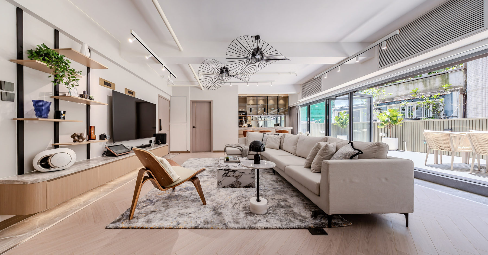

18 JULY 2025 · 4 MIN READ
Make a small Hong Kong apartment feel like a luxury penthouse
Use light, proportion, clever storage and a thoughtful material palette to make compact spaces feel open and composed.
Read on the original journal ↗